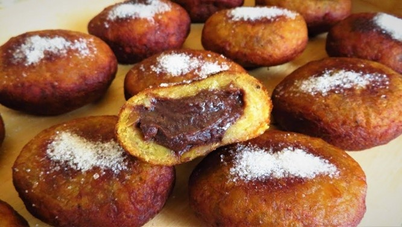
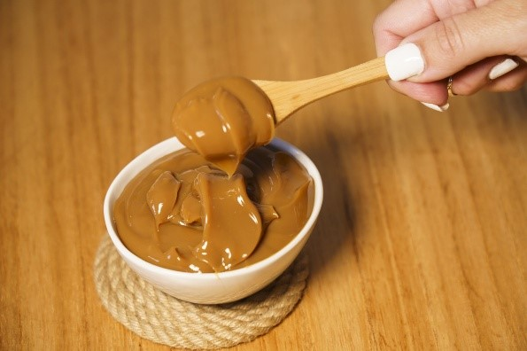
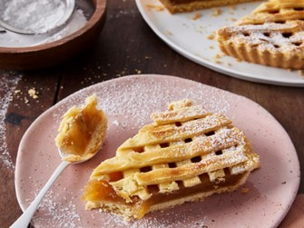
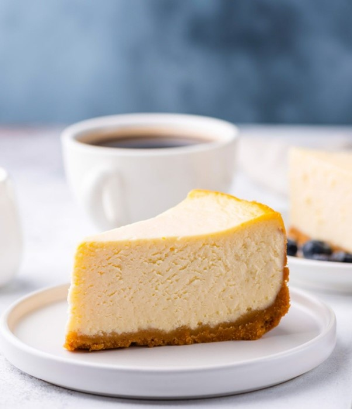

Ingredientes: Plátanos maduros, queso crema, azúcar, canela en polvo. Paso a paso: - Pelar y aplastar los plátanos. - Formar bolitas con el plátano y rellenarlas con el queso crema. - Enrollar las bolitas en azúcar y canela. - Servir fríos.
Ingredientes: Leche, azúcar. Paso a paso: - Colocar la leche y el azúcar en una olla y cocinar a fuego lento hasta que espese. - Dejar enfriar y disfrutar.
Ingredientes: Manzanas, masa para tarta, azúcar, canela, mantequilla. Paso a paso: - Precalentar el horno a 375°F (190°C). - Pelar y cortar las manzanas, mezclar con azúcar y canela. - Colocar la masa en un molde, agregar el relleno de manzana y tapar con más masa. - Hornear por 45-50 minutos hasta que esté dorado.
Ingredientes: Queso crema, azúcar, huevos, vainilla, galletas. Paso a paso: - Precalentar el horno a 325°F (165°C). - Mezclar el queso crema, azúcar, huevos y vainilla hasta obtener una crema suave. - Colocar la mezcla en un molde con base de galletas y hornear por 55-60 minutos. - Dejar enfriar y refrigerar.
